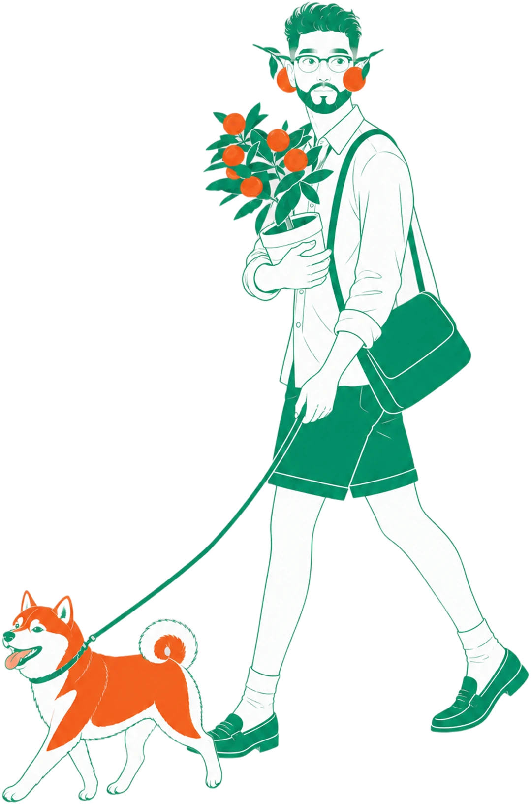
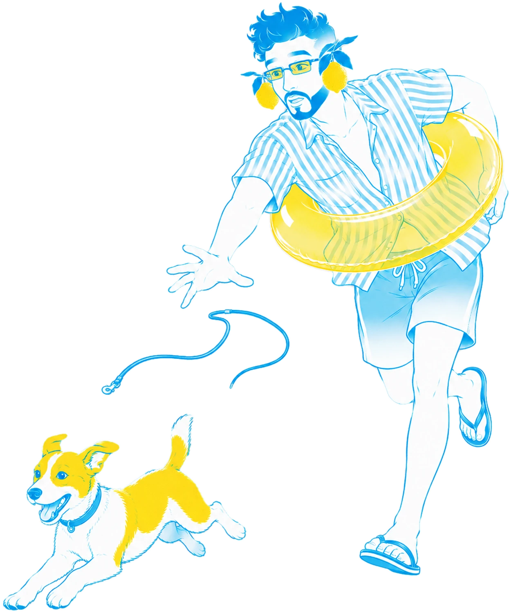
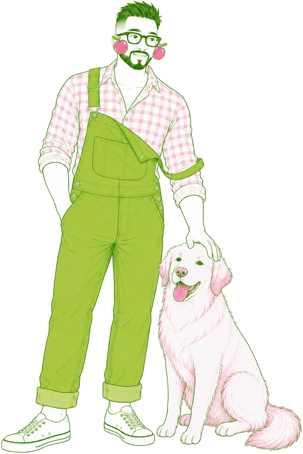
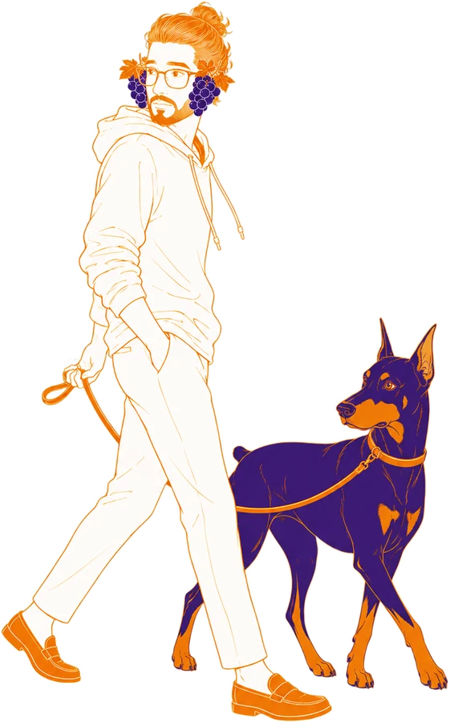

Have a nice day in Japan
在日本找房、
買房，
先看懂再出發。
日本租屋・買房知識大補帖

Who is Linus
台灣人仲介
Linus 帶你看懂
日本的房子。
東京不動產仲介 × 平面設計師
租屋、買房、置產，中文一對一



01 — Desktop
電腦版
一頁式場景首頁


四季場景輪播
東京／台北雙時鐘
左右切換分頁
左邊選單、右邊時鐘，
內容在中間一頁一頁翻。
02 — Guides
租屋・買房知識
章節左右翻頁


01先讀前言，掌握全貌
02三種申請方式一次比較
03初期費用術語，每張一看就懂
04台日買房的稅務與流程差異
禮金、敷金、保證公司⋯⋯
每一筆費用代表什麼，都整理好了。
03 — Free tools
免費工具
先幫你查清楚


01圖紙分析
上傳物件圖紙，看租金行情、初期費用、通勤與治安。
02預算試算
輸入條件，估算合理的房租與初期費用。
03AI 顧問
24 小時回答日本租屋、買房的問題。
04東京居住人格診斷
12 題，找出最適合你的東京生活圈。
01圖紙分析
02預算試算
03AI 顧問
04居住人格診斷
04 — Mobile
手機版，滑著看
底部導覽一鍵切換，通勤路上也能讀。


Let's talk
日本的生活，
從住好日開始。
搜尋 LINUS 住好日
linusniceday.com
LINE｜Linus0922
Threads｜@linus3524